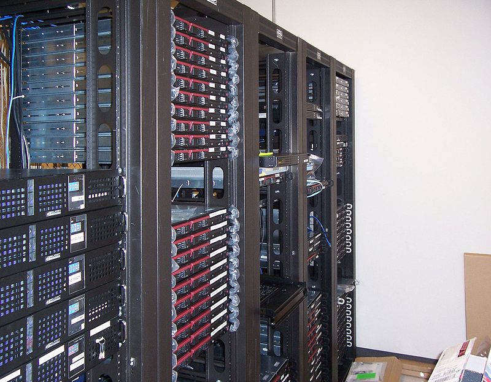
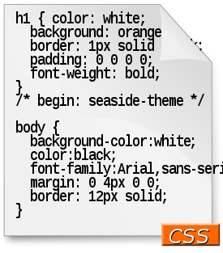

Practica 1
Dirección IP
La dirección IP es un conjunto de números que identifica, de manera lógica y jerárquica, a una Interfaz en red (elemento de comunicación/conexión) de un dispositivo (computadora, tableta, portátil, teléfono inteligente) que utilice el protocolo o (Internet Protocol), que corresponde al nivel de red del modelo TCP/IP. La dirección IP no debe confundirse con la dirección MAC, que es un identificador de 48 bits expresado en código hexadecimal, para identificar de forma única la tarjeta de red y no depende del protocolo de conexión utilizado en la red.
¿Qué tipos de Dirección IP existen?
Existen dos tipos de direcciones IP: las privadas y las públicas, que a su vez se pueden subdividir en IPs fijas o dinámicas. Comencemos describiendo la primera clasificación:
Dirección IP Privada
Esta es utilizada para identificar un dispositivo dentro de una red privada, por ejemplo, la que creas al conectar tu smartphone, la impresora, la tablet, y la laptop a una misma red de WiFi en tu hogar, o bien, las redes utilizadas a nivel empresarial.
Existen 3 rangos de estos conjuntos numéricos destinados exclusivamente para direcciones IP privadas, los cuales se catalogan en 3 clases distintas:
- Clase A: De 10.0.0.0 a 10.255.255.255, que son utilizadas generalmente para grandes redes privadas, por ejemplo, de alguna empresa trasnacional.
- Clase B: De 172.16.0.0 a 172.31.255.255, que son usadas para redes medianas, como de alguna empresa local, escuela o universidad.
- Clase C: 192.168.0.0 a 192.168.255.255, que son usadas para las redes más pequeñas, como redes domésticas.
Dirección IP Pública
Éstas son indispensables para conectarse a internet, y son visibles para cualquier internauta, y suele ser la que tiene tu router o tu módem.
Dirección MAC
En las redes de computadoras, la dirección MAC (siglas en inglés de Media Access Control) es un identificador de 48 bits (6 bloques de dos caracteres hexadecimales (8 bits)) que corresponde de forma única a una tarjeta o dispositivo de red. Se la conoce también como dirección física, y es única para cada dispositivo. Está determinada y configurada por el IEEE (los últimos 24 bits) y el fabricante (primeros 24 bits) utilizando el organizationally unique identifier. La mayoría de los protocolos que trabajan en la capa 2 del modelo OSI usan una de las tres numeraciones manejadas por el IEEE: MAC-48, EUI-48, y EUI-64, las cuales han sido diseñadas para ser identificadores globalmente únicos. No todos los protocolos de comunicación usan direcciones MAC, y no todos los protocolos requieren identificadores globalmente únicos.
Proveedor de servicios de Internet
El proveedor de servicios de Internet, (ISP, por las siglas en inglés de Internet service provider) es la empresa que brinda conexión a Internet a sus clientes. Un ISP conecta a sus usuarios a Internet a través de diferentes tecnologías como ADSL, cablemódem, GSM, dial-up, etc.
Modelo TCP/IP
El modelo TCP/IP es una descripción de protocolos de red desarrollado por Vinton Cerf y Robert E. Kahn, en la década de 1970. Fue implantado en la red ARPANET, la primera red de área amplia (WAN), desarrollada por encargo de DARPA, una agencia del Departamento de Defensa de los Estados Unidos, y predecesora de Internet; por esta razón, a veces también se le llama modelo DoD o modelo DARPA.
El modelo TCP/IP es usado para comunicaciones en redes y, como todo protocolo, describe un conjunto de guías generales de operación para permitir que un equipo pueda comunicarse en una red. TCP/IP provee conectividad de extremo a extremo especificando cómo los datos deberían ser formateados, direccionados, transmitidos, enrutados y recibidos por el destinatario.
Redirección de puertos
La redirección de puertos, a veces llamado tunelado de puertos, es la acción de redirigir un puerto de red de un nodo de red a otro. Esta técnica puede permitir que un usuario externo tenga acceso a un puerto en una dirección IP privada (dentro de una LAN) desde el exterior vía un router con NAT activado.
La redirección de puertos permite que computadoras remotas (por ejemplo, máquinas públicas en Internet) se conecten a un computador en concreto dentro de una LAN privada.
Por ejemplo:
la redirección del puerto 8000 en el router a la máquina de otro usuario permite streaming SHOUTcast
la redirección de los puertos 5000 a 6000 a la máquina de un usuario permite el uso de Unreal Tournament
Las máquinas con Linux modernos consiguen esto añadiendo reglas de iptables a la tabla nat: con el destino DNAT a la cadena de PREROUTING o con el destino SNAT en la cadena de POSTROUTING.
Las máquinas BSD y Mac OS X usan una herramienta similar llamada ipfw. La herramienta ipfw corre probablemente como una parte ya integrada del núcleo del sistema operativo.
Servidor web
Un servidor web o servidor HTTP es un programa informático que procesa una aplicación del lado del servidor, realizando conexiones bidireccionales o unidireccionales y síncronas o asíncronas con el cliente y generando o cediendo una respuesta en cualquier lenguaje o aplicación del lado del cliente. El código recibido por el cliente es renderizado por un navegador web. Para la transmisión de todos estos datos suele utilizarse algún protocolo. Generalmente se usa el protocolo HTTP para estas comunicaciones, perteneciente a la capa de aplicación del modelo OSI. El término también se emplea para referirse al ordenador.
DNS
Las DNS son las siglas que forman la denominación Domain Name System o Sistema de Nombres de Dominio y además de apuntar los dominios al servidor correspondiente, nos servirá para traducir la dirección real, que es una relación numérica denominada IP, en el nombre del dominio.
Para que Sirven las DNS
Pues bien, los DNS sirven para indicarle al usuario que teclea un dominio a que servidor debe ir a recoger la página web que desea consultar.
Cortafuegos
Un cortafuegos (del término original en inglés firewall) es la parte de un sistema o una red informáticos que está diseñada para bloquear el acceso no autorizado, permitiendo al mismo tiempo comunicaciones autorizadas.
Se trata de un dispositivo o conjunto de dispositivos configurados para permitir, limitar, cifrar o descifrar el tráfico entre los diferentes ámbitos sobre la base de un conjunto de normas y otros criterios.

Alojamiento web
El alojamiento web (en inglés: web hosting) es el servicio que provee a los usuarios de Internet un sistema para poder almacenar información, imágenes, vídeo, o cualquier contenido accesible vía web. Es una analogía de "hospedaje o alojamiento en hoteles o habitaciones" donde uno ocupa un lugar específico, en este caso la analogía alojamiento web o alojamiento de páginas web, se refiere al lugar que ocupa una página web, sitio web, sistema, correo electrónico, archivos, en Internet o más específicamente en un servidor, que por lo general hospeda varias aplicaciones o páginas web.
Las compañías que proporcionan espacio de un servidor a sus clientes se suelen denominar con el término en inglés web host.
Dominio de Internet
Dominio de Internet es un nombre único que identifica a una subárea de Internet.
El propósito principal de los nombres de dominio en Internet y del sistema de nombres de dominio (DNS), es traducir las direcciones IP de cada activo en la red, a términos memorizables y fáciles de encontrar. Esta abstracción hace posible que cualquier servicio (de red) pueda moverse de un lugar geográfico a otro en la Internet, aun cuando el cambio implique que tendrá una dirección IP diferente.
Sin la ayuda del sistema de nombres de dominio, los usuarios de Internet tendrían que acceder a cada servicio web utilizando la dirección IP del nodo (por ejemplo, sería necesario utilizar http://172.217.10.110/ en vez de http://google.com). Además, reduciría el número de webs posibles, ya que actualmente es habitual que una misma dirección IP sea compartida por varios dominios.
Protocolo de transferencia de archivos
El Protocolo de transferencia de archivos (en inglés File Transfer Protocol o FTP) es un protocolo de red para la transferencia de archivos entre sistemas conectados a una red TCP (Transmission Control Protocol), basado en la arquitectura cliente-servidor. Desde un equipo cliente se puede conectar a un servidor para descargar archivos desde él o para enviarle archivos, independientemente del sistema operativo utilizado en cada equipo.
HTML
HTML, siglas en inglés de HyperText Markup Language (‘lenguaje de marcas de hipertexto’), hace referencia al lenguaje de marcado para la elaboración de páginas web. Es un estándar que sirve de referencia del software que conecta con la elaboración de páginas web en sus diferentes versiones, define una estructura básica y un código (denominado código HTML) para la definición de contenido de una página web, como texto, imágenes, videos, juegos, entre otros. Es un estándar a cargo del World Wide Web Consortium (W3C) o Consorcio WWW, organización dedicada a la estandarización de casi todas las tecnologías ligadas a la web, sobre todo en lo referente a su escritura e interpretación. HTML se considera el lenguaje web más importante siendo su invención crucial en la aparición, desarrollo y expansión de la World Wide Web (WWW). Es el estándar que se ha impuesto en la visualización de páginas web y es el que todos los navegadores actuales han adoptado.

Hoja de estilos en cascada
CSS (siglas en inglés de Cascading Style Sheets), en español «Hojas de estilo en cascada», es un lenguaje de diseño gráfico para definir y crear la presentación de un documento estructurado escrito en un lenguaje de marcado. Es muy usado para establecer el diseño visual de los documentos web, e interfaces de usuario escritas en HTML o XHTML; el lenguaje puede ser aplicado a cualquier documento XML, incluyendo XHTML, SVG, XUL, RSS, etcétera. Te puede ayudar a crear tu propio sitio web. Junto con HTML y JavaScript, CSS es una tecnología usada por muchos sitios web para crear páginas visualmente atractivas, interfaces de usuario para aplicaciones web y GUIs para muchas aplicaciones móviles (como Firefox OS).
.CSS está diseñado principalmente para marcar la separación del contenido del documento y la forma de presentación de este, características tales como las capas o layouts, los colores y las fuentes.
Esta separación busca mejorar la accesibilidad del documento, proveer más flexibilidad y control en la especificación de características presentacionales, permitir que varios documentos HTML compartan un mismo estilo usando una sola hoja de estilos separada en un archivo .css, y reducir la complejidad y la repetición de código en la estructura del documento.
